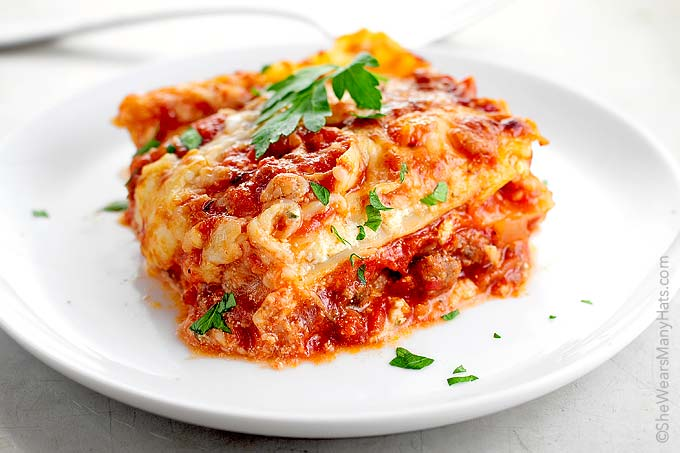

Lasagna

Klassisk lasagne är väl en rätt man aldrig tröttnar på? Med det här receptet blir din lasagne perfekt med en mjuk och härlig konsistens och dessutom har den en ljuv och exemplarisk smak. Parmesanosten är pricken över i!
- Gul löl
- Vitlöksklyftor
- 500g nötfärs
- 1msk olja
- 4 msk tomatpure
- Sätt ugnen på 175°C.
- Skala och hacka lök och vitlök. Fräs färs, lök och vitlök i oljan i en stekpanna. Tillsätt tomatpuré som får fräsa med i färsen. Krydda med timjan och rosmarin. Tillsätt krossade tomater och buljongtärning låt det koka ca 10 minuter. Smaka av med salt och peppar.
- Varva sås, lasagneplattor och köttfärssåsen i en ugnssäker form.